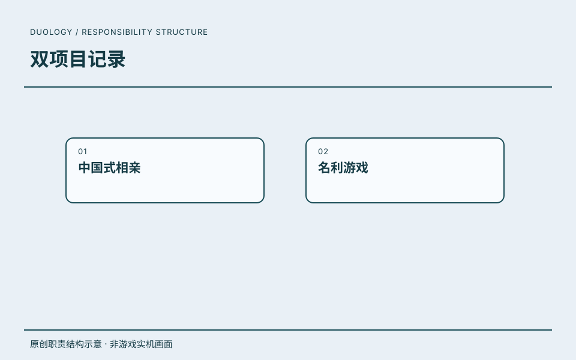

原创职责结构示意 · 非游戏实机画面ROLE / 我的角色主策划 / 执行制作人
在这段经历中，以主策划 / 执行制作人角色参与《中国式相亲》《名利游戏》。
CAREER / 项目记录任职记录
以主策划 / 执行制作人身份参与《中国式相亲》、《名利游戏》。
这里保留任职角色与项目记录。
RECORD / 可追溯记录任职记录
在这段经历中，以主策划 / 执行制作人角色参与《中国式相亲》《名利游戏》。
- 任职公司
- 北京波浪科技有限公司
- 角色
- 主策划 / 执行制作人
- 时间
- 2022.07—2025.07
任职、角色与职责依据本人履历及确认。图示是本站原创的职责结构表达。
DESIGN JOURNAL / 方案摘要
项目方案.
读背景、职责、方案与可证实产出。
来源：用户提供的两张中国式相亲项目设计截图。下方文字为本站依据图中关系整理的阅读摘要，不认定全部系统均由个人独立完成；历史设计图不代表相关功能全部上线，也不是经营成果证明。
整体系统结构
 中国式相亲 · 项目原始设计截图
中国式相亲 · 项目原始设计截图设计问题
经营、探索、恋爱与角色成长，如何共同服务于一条持续推进的游戏主线？
图示产出
图示将玩法入口、资源来源、解锁依赖和成功/失败分支放到同一张结构图中，可用于讨论系统拆分与跨功能衔接。
关键关系
- 主线由经营相亲会所、场景探索、角色成长与债务目标连接，避免功能只作为孤立入口存在。
- 邀请入会串联交谈、回合战斗、意愿值和会员入库；会员再进入匹配计算，成功获得金币与声望，失败保留无法匹配分支。
- 会所提升解锁更多席位、线上相亲和布置；更多店铺与员工招募形成经营扩展路径。
- 主线、委托、支线、场景交互、突发事件和小游戏分别提供资源；角色培养与好感、约会及婚姻构成外围成长。
在页面内阅读整体系统结构大图
玩法循环与资源产出
 中国式相亲 · 项目原始设计截图
中国式相亲 · 项目原始设计截图设计问题
哪些行为产出资源，资源消耗在哪里，又如何反馈到下一轮玩法？
图示产出
图中用产出、消耗和影响区分连接关系，围绕资源闭环讨论节奏和成长；这里只展示关系，不公开具体概率、经济配置或运营统计。
关键关系
- 邀请入会产出会员与金币，会员进入相亲匹配；匹配、主线和委托任务产出声望，声望反馈到会所等级。
- 行动力连接邀请入会、相亲匹配与小游戏；图中区分日常恢复与活力兑换，说明行动资源如何限制参与节奏。
- 金币进入道具、装备及经营投入；小游戏产出经验，经验进入技能，装备与技能再影响角色成长和玩法表现。
- 女主支线与约会产出好感度，好感阶段连接恋爱养成；会所装修、员工、活动及其他店铺形成经营分支。
在页面内阅读玩法循环与资源产出大图
项目目录中另有邀请入会、会员征婚、相亲匹配、任务与数值循环等设计材料。本次以两张指定截图为重点，不上传完整策划案、数值表、统计文件或美术源工程；原有相亲玩法署名摘要与 Steam 项目介绍保留在下方。
贡献依据为文档更新表中的修改人和修订内容，不凭目录归属认定独立作者。团队美术用于说明界面表现；历史方案与示例数值不代表所有功能上线或实际业绩。
技能树的成长目标与状态反馈
 《【核心系统】技能系统》第 7 页，界面效果与资源标注 · 原始资料
《【核心系统】技能系统》第 7 页，界面效果与资源标注 · 原始资料设计问题
如何将日常行为获得的经验转化为长期目标，并让玩家理解当前为何不能学习技能？
文档产出与来源
《技能系统》更新表记录修改人吴天昊，包含创建文档、技能树重构、解锁逻辑与效果图细化（2023.01—11）。原图中的资源名是历史交付标注，不公开完整配置。
关键方案
- 以前置技能、阶段解锁和经验消耗组织成长，将小游戏、任务与邀请入会连接到角色能力。
- 区分未解锁、已解锁未激活、已激活及满级状态；锁定技能仍可选中查看详情，帮助规划后续目标。
- 激活与升级按钮说明不足原因；满级后隐藏消耗与升级按钮，阶段进度显示距离下一层的要求。
- 切回页签保留上次选择；新解锁技能用红点提示，查看后清除，避免提示长期堆积。
在页面内阅读技能树的成长目标与状态反馈大图
会所装修的预览、购买与应用
 《【模拟经营】装修系统》第 7 页，家具编辑界面 · 原始资料
《【模拟经营】装修系统》第 7 页，家具编辑界面 · 原始资料设计问题
怎样让经营投入既改变场景，也形成明确的功能解锁和收集目标？
文档产出与来源
《装修系统》由其他成员创建；本人在 2023.07—10 的更新表中记录了细节、界面交互、空间页签、评分与购买后自动应用修订。本站不将初始方案或团队美术归为个人独立成果。
关键方案
- 区分数值向与功能向家具，建立会所氛围、声望与系统开放之间的关系。
- 进入编辑模式保留类别和当前使用家具；选中时高亮场景位置并调整镜头，退出后恢复人物与镜头。
- 家具列表区分未解锁、可购买、已购和使用中，详情说明解锁条件；购买成功自动应用，减少重复操作。
- 以阶段性氛围评选补充弱经营目标；提示、页签红点和购买按钮分别表达发现、条件与操作状态。
在页面内阅读会所装修的预览、购买与应用大图
情感阶段与条件化交互
 《【核心系统】情感系统》第 2 页，情感界面参考 · 原始资料
《【核心系统】情感系统》第 2 页，情感界面参考 · 原始资料设计问题
怎样把好感数值、支线条件和约会操作组成一条可理解的关系成长线？
文档产出与来源
《情感系统》初始创建与阶段奖励含其他成员贡献；更新表记录本人补充好感度与界面逻辑、重构为情感系统（2023.06、11）。界面参考与团队角色美术分开归属。
关键方案
- 用相逢、熟人、朋友、挚友、恋人组织阶段目标；好感达到上限仍需满足阶段条件，溢出进度在解锁后承接。
- 角色切换同时刷新阶段、条件、喜好和角色表现；达成条件用勾选等反馈，不只显示一个进度数字。
- 约会入口随阶段和进行中状态变化；邀约冷却与爽约冷却通过演出说明，不将不可操作原因隐藏。
- 喜好信息按直接显示、谜题及条件解锁分层呈现；任务、送礼、换装和关系培养由同一阶段逻辑连接。
在页面内阅读情感阶段与条件化交互大图
相亲节目的技能时机与现场反馈
 《【补充系统】相亲节目（非诚勿扰）》第 6 页，技能使用效果图 · 原始资料
《【补充系统】相亲节目（非诚勿扰）》第 6 页，技能使用效果图 · 原始资料设计问题
如何让玩家从观察匹配变成主动主持，并把现场判断转为明确的操作时机？
文档产出与来源
《相亲节目（非诚勿扰）》更新表记录修改人吴天昊，包含创建、界面流程、技能设定和细化（2025.03）。这是后续七阶段版本；下方原有五阶段简历修改方案是早期版本，两者不能混作同一套规则。
关键方案
- 开场查看嘉宾简历并选择携带技能，进入节目后以话题、留灯与热度表达局势变化。
- 技能区分可用、当前场景可释放及冷却或次数耗尽，快捷键与悬停说明配合状态表现。
- 释放窗口提供倒计时及跳过入口，过时按跳过处理；准备页在次数耗尽时置灰开播并解释原因。
- 将牵手结果与节目热度分别纳入结算设计；这里不公开技能参数、奖励数值或剧本，也不将热度当实际收视数据。
在页面内阅读相亲节目的技能时机与现场反馈大图
 中国式相亲 · Steam 商店截图查看原图 ↗
中国式相亲 · Steam 商店截图查看原图 ↗ 相亲玩法 · 本站原创脱敏结构图
相亲玩法 · 本站原创脱敏结构图PROJECT / 工作说明相亲玩法
项目背景
会所经营中的相亲环节需要让玩家参与判断，而不只等待自动配对。
本人职责
署名更新记录确认我负责该玩法方案与效果图说明；界面美术由团队相应岗位承担。
关键方案
将流程拆为简历调整、舞台登场、话题交流、反选与结算，分别描述玩家选择和系统反馈。
可证实产出
形成五阶段玩法规则与界面说明，用于团队对齐实现。材料证明方案产出，不证明所有功能上线或经营效果。
摘要依据：《补充系统：非诚勿扰相亲》署名玩法方案，2025年3月更新记录。流程图由本站依据脱敏摘要重新绘制；另附用户授权的两张系统设计截图；完整 PDF 未公开。
放大流程图 ↗阅读文档摘要 ↗ 在页面内阅读流程图＋
可滚动阅读大图；也可打开流程图缩放。下方文字提供同等内容。
项目文档未署名，不据此认定本人独立撰写全部方案、剧本或程序。原始图和贴图来自用户指定项目目录，美术执行属于团队；历史需求与待定事项不作为最终上线范围或量化业绩证明。排除文档中的其他游戏临时参考图，不上传原视频、完整剧本和配置。
 名利游戏项目 Resources/UI/Menu/menu_bg.png，团队主菜单底图 · 非完整运行界面查看原图 ↗
名利游戏项目 Resources/UI/Menu/menu_bg.png，团队主菜单底图 · 非完整运行界面查看原图 ↗视频、选择与故事线的模块拆分
 《名利游戏》策划案，三、思维导图 · 原始资料
《名利游戏》策划案，三、思维导图 · 原始资料设计问题
如何把真人视频内容组织为可配置、可探索的互动叙事产品？
文档产出与来源
《名利游戏》策划案的功能导图，配合《附件二》《玩法功能需求清单》阅读。三份文档未署名，只用来说明项目需求范围；本人角色沿用已确认的主策划 / 执行制作人经历。
关键方案
- 将视频播放、选项逻辑、分支线路、界面及音效分为模块，区分内容承载、选择判断与探索反馈。
- 条件选项可锁定或隐藏；选择可触发片段跳转、关系变化或特定分支，点击后退出循环视频并隐藏选项。
- 故事线节点区分已解锁与未解锁，连线表达已走过路径；支持拖动、回到当前节点与已解锁片段跳转。
- 探索进度与结局进度分别定义；导图和正文中的待定功能、限时选项与扩展设想不作为最终上线承诺。
在页面内阅读视频、选择与故事线的模块拆分大图
从存档续播到分支回看的操作闭环
 《名利游戏》策划案，四、操作流程；附件二亦有同图 · 原始资料
《名利游戏》策划案，四、操作流程；附件二亦有同图 · 原始资料设计问题
怎样让开始、继续、选择与失败回看形成连续体验，而不是孤立播放片段？
文档产出与来源
策划案与附件二中的原始操作流程图，不包含具体剧本、视频编号、选择答案或结局剧透。资料说明历史需求，不将存档、引擎与平台接入归为本人程序实现。
关键方案
- 按有无存档提供开始或继续入口，继续时回到记录片段，故事线入口提供章节与路径浏览。
- 循环片段承载选择等待，选定后进入对应视频；首次片段不提供跳过，已看内容的控制与未看内容区分。
- 失败结局后可回到故事线重新探索，节点解锁与路径点亮帮助玩家判断已看和未看内容。
- 章节完成与最终视频分别判断；播放结束后进入对应结局或返回主入口，进度和成就需求单独对齐。
在页面内阅读从存档续播到分支回看的操作闭环大图
故事线的视觉编码与回看提示
 名利游戏项目 Resources/UI/Choose/choose_help_bg.png，团队故事线帮助贴图 · 原始资料
名利游戏项目 Resources/UI/Choose/choose_help_bg.png，团队故事线帮助贴图 · 原始资料设计问题
如何在复杂分支中让玩家识别节点、锁定路径和下一层，而不提前泄露剧情？
文档产出与来源
项目自身 UI/Choose/choose_help_bg.png 原始帮助贴图，未补画剧情缩略图或伪造运行界面。此贴图不是完整界面，实际节点、文字和操作由 UI 其他元素组合。
关键方案
- 矩形承载片段节点，分支连线说明路线关系，菱形和锁符号分别提供进度与条件提示。
- 亮色与灰态表达不同状态，层级箭头帮助理解路径继续方向；正文摘要补充状态含义，避免只靠颜色读图。
- 可拖动的大图与定位入口服务重复探索，帮助图负责解释视觉规则，不承担所有剧情信息。
- 界面与图标属于团队美术资源，展示的是策划需求与交互表达之间的关系，不声称本人绘制。
在页面内阅读故事线的视觉编码与回看提示大图
 互动叙事设计 · 本站原创脱敏结构图
互动叙事设计 · 本站原创脱敏结构图PROJECT / 工作说明互动叙事设计
项目背景
真人视频叙事需要通过选择、分支与进度反馈形成可操作的体验。
本人职责
以主策划／执行制作人身份参与项目；文档未署名，不将引擎、SDK、美术和全部剧情归为个人执行。
关键方案
围绕视频播放、条件选择、故事线节点与章节进度组织需求，推动互动叙事规则和交付范围对齐。
可证实产出
项目材料可证实上述需求范围；本摘要说明参与角色与需求背景，不据此声称独立完成所有功能或逐项确认最终上线范围。
摘要依据：本人已确认履历；《名利游戏》策划案及功能需求材料作项目背景。本站原创需求结构图，不展示剧情剧透、原视频或文档中的第三方临时参考图。
放大流程图 ↗阅读文档摘要 ↗ 在页面内阅读流程图＋
可滚动阅读大图；也可打开流程图缩放。下方文字提供同等内容。